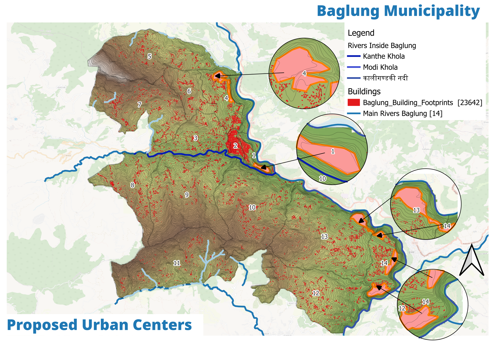
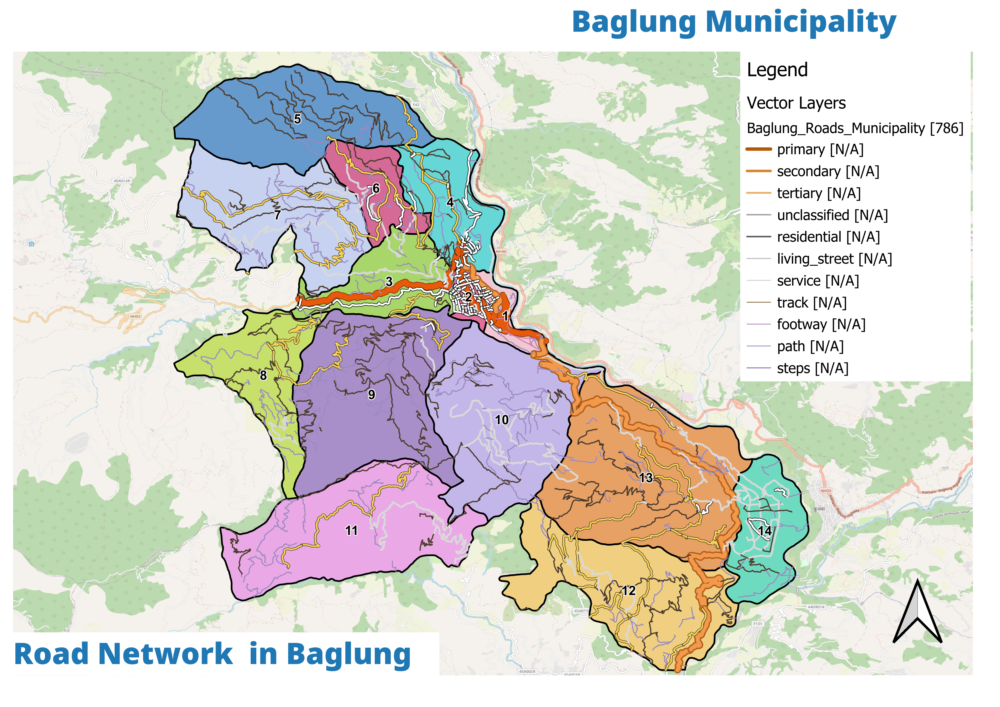
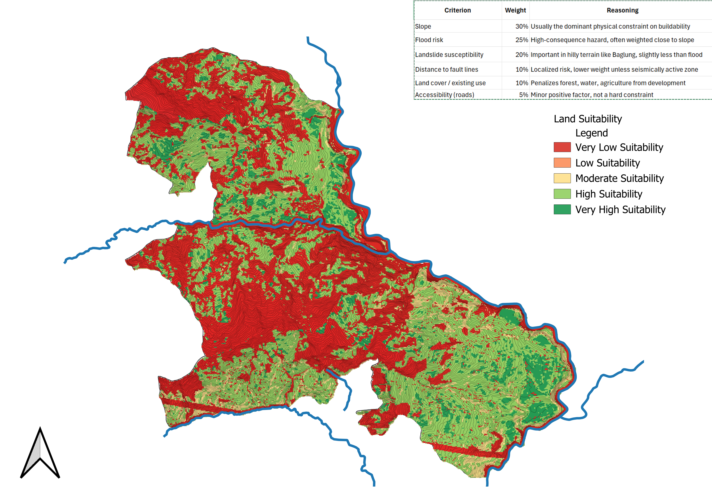

बागलुङ नगरपालिका · Baglung Municipality — Official Portal
A complete M.Sc. Urban Planning Studio project — from field surveys on the Kali Gandaki terraces to a demographic cohort model, GIS suitability analysis, social development strategy and a sector-by-sector investment plan.
We look at evidence first, then decide what Baglung needs — from vision to where we build, what we fund, and how we track progress. Full overview →
A beautiful, prosperous hill town where every ward — from the busy bazaar to the high villages — shares a good quality of life. The goal is to make the town more connected, fair, green and able to handle floods.
Read vision & goal →Roads that don’t flood, more local jobs, better health and schools, cleaner streets and forests, and a town hall that can deliver — each aim links to projects you can see on the map.
See the six aims →Baglung in plain terms — the land, the people, and what daily life needs. Tap any card for the full story.
From the Kali Gandaki river bench up to 2,679 m ridges — the hills shape where we can build.
A smaller, older town with more households — fewer people, but more homes needed.
Farming is getting older; shops, building work and visitors are the new work.
Only about 1 in 16 km is paved — the rest is gravel or trail.
Downtown, corridor and hills live very different lives — see Social.
Two-thirds is tree-covered — our green belt and water source.
Some riverside areas flood; some slopes can slip — where to be careful.
Most funds come from national grants — we aim to raise more locally.
Older, smaller, more female-headed, richer per household. The plan reallocates school capacity to elder care, serves women-led households, and rebuilds where deprivation is highest.
13.2% (2021) to one in five — old-age dependency nearly doubles.
Population falls, households rise — family size 3.81→3.52. New homes needed.
1 in 7 abroad; 80.7% are 15–34. Return migration = labour.
Wards 1–4 & 14 concentrate half the people — up to 70:1 density spread.
We can't build everywhere — the hills and rivers tell us where. The busy town centre stays compact, the highway corridor is where new growth goes, and the hills stay green for farming and forests.
Tap a place to see what it means for you — what’s there, what’s planned, and which projects are nearby.
Where houses go, where roads run, where green areas stay, and where we stay safe from floods and landslides.

Core/corridor/hills — the bridge. Next: full Plan Explorer.

Primary NH-03 spine; much is trail/rural track. Proposed: hill corridor + transit circuit.

Weighted overlay — terraces near primary road score highest; flood-prone fans lowest.
Roads, water, schools, health, jobs, nature, money and how the town runs — each has a simple plan you can read.
Land use, settlement, transport, infra
Education, health, GESI, Three Baglungs
Waste, forest, water, climate
Hazard, vulnerability, mitigation
Homestay W10, Shaligram, circuits
Agro-processing, enterprise
Revenue, grants, financing
Governance, capacity, M&E roles
About 1,040 crore over 15 years, with a clear order: first fixes, then growth, then finishing up to 2041.
Mostly national and local funds, with some private partners — year-one actions start the most urgent works.
See the plan →Fix flooding, water and the most urgent roads — start homestays and the rafting put-in.
New growth along the highway, hill projects and tourism circuits take shape.
Consolidate, finish larger works and track progress every year.
We visited all 14 wards, made maps of the hills and rivers, used census and municipal records, and double-checked every number.